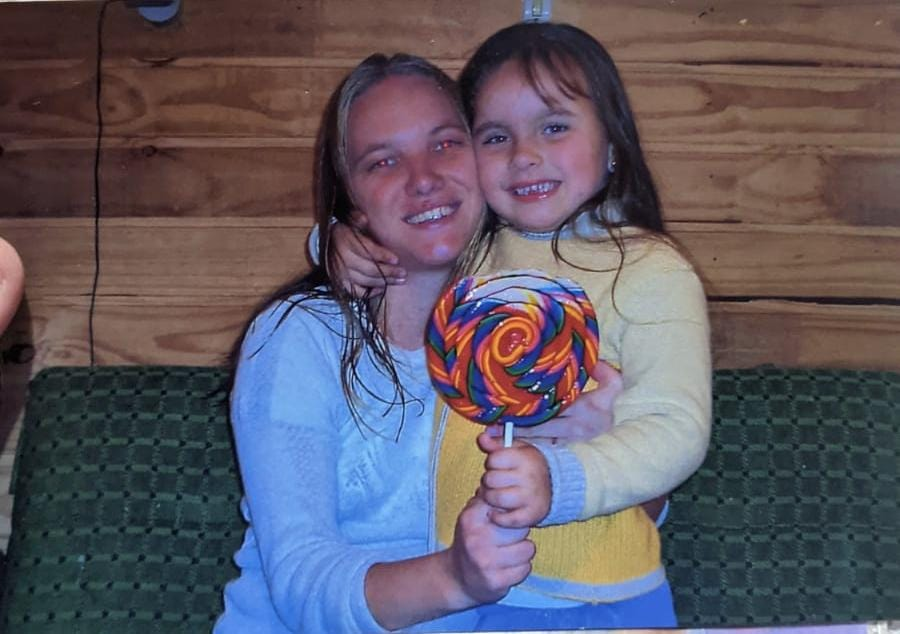
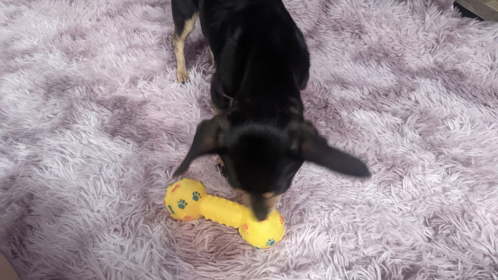

Ilha da Harmonia
Markerting
Marketing é a arte de explorar, criar e entregar valor para satisfazer as necessidades do mercado por meio de produtos ou serviços que possam interessar aos consumidores.
A finalidade do marketing é criar valor e chamar a atenção do cliente, gerando relacionamentos lucrativos para ambas as partes.
Equipe de Marketing
Ricardo, Designer:
Ricardo não apenas segue as tendências, mas as redefine, criando um estilo próprio que é uma extensão única de sua personalidade vibrante. Seja na elaboração de logotipos que contam a história de uma marca ou na criação de materiais promocionais que cativam o público, seu toque artístico é a assinatura que torna cada projeto verdadeiramente inesquecível. Ele é o artista que transforma momentos comuns em obras-primas. É um designer de marketing, mas para mim, ele é o artista que pinta as nuances mais belas da nossa história.
Vitor, Analista:
A criatividade de Vitor é um fogo que nunca se apaga. Seja desenvolvendo campanhas publicitárias cativantes ou concebendo estratégias inovadoras.Além de suas proezas profissionais, é o coração generoso dele que faz dele um profissional inigualável. Sua dedicação as pessoas ao seu redor vai além das fronteiras do trabalho. Ele é um ouvinte atento, um conselheiro sábio e um apoiador incansável nos momentos de desafio. Seu compromisso não é apenas com a excelência profissional, mas também com o crescimento e o bem-estar de todos ao seu redor.

Simone, Coordenador:
Simone é uma estrategista nata. Ela tece as ideias como uma tapeçaria, misturando análise de dados com a intuição materna, criando uma sinfonia de eficácia e empatia que ressoa em cada campanha. Ela encoraja a originalidade, celebrando cada ideia como se fosse um novo membro da família, alimentando a cultura inovadora que define sua equipe.

Lesse, Gestor:
Quando se trata de inovação, Lesse está sempre à frente. Ela cria campanhas que tocam os corações e capturam a imaginação, usando seus truques astutos para garantir que cada mensagem seja memorável. Ela não apenas lidera sua equipe com amor e lealdade, mas também inspira um ambiente de trabalho onde todos são valorizados. Seu lema é simples: "Se não faz o rabo balançar, não faz sentido!"